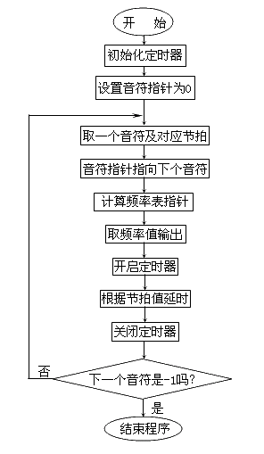

返 回：无
MUSIC程序并未返回什么有实际意义的错误码，因为没有必要。图4－3是这个程序对应的流程图，在数据段中我们定义了三个表：FREQ表中定义了休止符、中音C－B各音符对应的N值；NOTE表中定义了乐谱，我们用数字0表示休止符，用1－7表示C－B，这样做的目的是便于用这些数字作为指针在FREQ表中找到N值。
图4-3 MUSIC程序流程图
| -62- | PC机汇编语言实战精解 | ||||||||||||||||||||
|
调 用：INT 21H 返 回：无 |
|||||||||||||||||||||
|
批处理文件（.BAT）中常见象"IF ERRORLEVEL 4 GOTO END"这样的语句。其中的"ERRORLEVEL"就是刚运行过的程序通过4CH功能返回给DOS的错误码。这个错误码不仅可用于批处理，而且也可用于其它程序。程序可以通过DOS提供的"4DH"功能取到上一个程序留下的错误码来判断上一个程序执行的情况。关于这方面更多的知识这里不作详细介绍，可查阅有关书籍。现在只需知道这个功能可以十分轻松地结束进程就可以了。 MUSIC程序并未返回什么有实际意义的错误码，因为没有必要。图4－3是这个程序对应的流程图，在数据段中我们定义了三个表：FREQ表中定义了休止符、中音C－B各音符对应的N值；NOTE表中定义了乐谱，我们用数字0表示休止符，用1－7表示C－B，这样做的目的是便于用这些数字作为指针在FREQ表中找到N值。 |
|||||||||||||||||||||
|  图4-3 MUSIC程序流程图 |
|||||||||||||||||||||
| DL_TIME表中定义了每个音符的节拍，我们用220Ms作为一个四分音符的发音时间，对应时钟计数值为4，这使得乐曲听起来比正常的要快一些。那么程序是如何以"音符"作为指针寻找对应N值的呢？ | |||||||||||||||||||||
| Copyright © 2004-2005 Chunk Lee | www.nucstorm.com | ||||||||||||||||||||